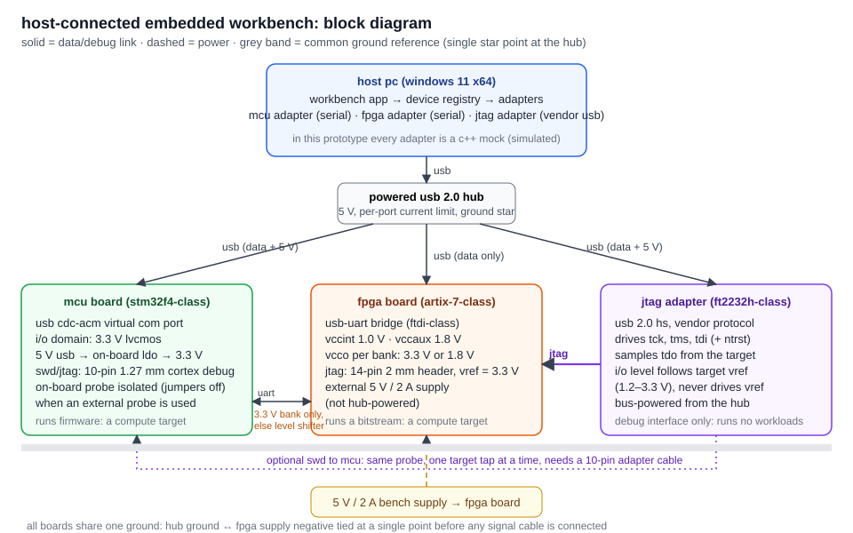

geometry ascii stl
no geometry loaded
drag to rotate · right-drag or shift-drag to pan · scroll to zoom
stl files carry no units; pick the unit used when exporting.
import an ascii stl and a nodal temperature csv. both files are parsed and validated by the c++ backend.
drag to rotate · right-drag or shift-drag to pan · scroll to zoom
click a node to inspect it · drag to rotate · scroll to zoom
expected header: node_id,x_m,y_m,z_m,temperature_C (metres, degrees celsius)
uniform rod, two-node linear elements: −d/dx(kA dT/dx) = qA with fixed end temperatures. lateral surface insulated.
| N | h (m) | max midpoint error (°C) | theory qh²/8k (°C) | max nodal error (°C) | observed order |
|---|---|---|---|---|---|
| run the analysis to fill this table | |||||
midpoint error uses fe interpolation (Ti+Ti+1)/2 against the exact T at the element midpoint. observed order = log(ecoarse/efine) / log(hcoarse/hfine).
the same fixed-seed batch of independent rod solves, run serially and on a bounded c++ worker pool.
| mode | p | runs (s) | median (s) | speedup T₁/Tₚ | efficiency | max |ΔT| (°C) |
|---|---|---|---|---|---|---|
| run the benchmark to fill this table | ||||||
host-side adapters for one microcontroller, one fpga board and one jtag debug adapter. every device here is simulated; no usb, serial or jtag hardware is touched.

h = tanh(wx + b), ŷ = vh + c, J = ½(ŷ − y)². x = 1, y = 2, start w = 0.5, b = 0, v = 1, c = 0, learning rate 0.1.
| param | before | ∂J/∂θ analytic | central diff. | |error| | ≤ 1e−5 | after 1 step |
|---|
all four gradients are negative at the start: ŷ ≈ 0.462 is below the target 2, so increasing any parameter raises ŷ and lowers the loss. gradient descent steps against the gradient, so every parameter increases on the first step.
the model can hit y = 2 exactly (via c alone), so the loss keeps falling towards zero; it drops fast early, then slows as the error and therefore the gradient shrink.